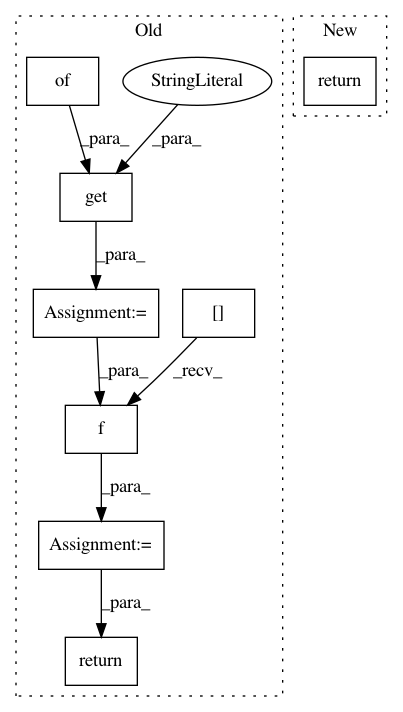

dad8e51dff940ecdd75c1d553f34a9d82c032c8f,softlearning/preprocessors/utils.py,,get_preprocessor_from_variant,#Any#Any#,31
Before Change
def get_preprocessor_from_variant(variant, env, *args, **kwargs):
preprocessor_params = variant["preprocessor_params"]
preprocessor_type = preprocessor_params.get("type")
preprocessor_kwargs = deepcopy(preprocessor_params.get("kwargs", {}))
if not preprocessor_params or preprocessor_type is None:
return None
preprocessor = PREPROCESSOR_FUNCTIONS[
preprocessor_type](
env.active_observation_shape,
*args,
**preprocessor_kwargs,
**kwargs)
return preprocessor
After Change
def get_preprocessor_from_variant(variant, env, *args, **kwargs):
preprocessor_params = variant["preprocessor_params"]
return get_preprocessor_from_params(
env, preprocessor_params, *args, **kwargs)
In pattern: SUPERPATTERN
Frequency: 3
Non-data size: 8
Instances
Project Name: rail-berkeley/softlearning
Commit Name: dad8e51dff940ecdd75c1d553f34a9d82c032c8f
Time: 2018-11-30
Author: hartikainen@berkeley.edu
File Name: softlearning/preprocessors/utils.py
Class Name:
Method Name: get_preprocessor_from_variant
Project Name: rail-berkeley/softlearning
Commit Name: 20fe7b4cbf62f6223241d6cafc6e8ea48701efdd
Time: 2018-10-22
Author: hartikainen@berkeley.edu
File Name: softlearning/value_functions/utils.py
Class Name:
Method Name: get_Q_function_from_variant
Project Name: rail-berkeley/softlearning
Commit Name: 20fe7b4cbf62f6223241d6cafc6e8ea48701efdd
Time: 2018-10-22
Author: hartikainen@berkeley.edu
File Name: softlearning/value_functions/utils.py
Class Name:
Method Name: get_V_function_from_variant